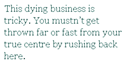

Once I knew who I really was. Where I was. Who my people were — my family, my friends, my world.
I miss them all. They were sure and easy times. Made from kinships and friendships — no, more than friendships, but I don’t have the right word to call it. Especially now, now that I’ve lost them all.
I died on them. Back then. Age of 22. The pity of dying’s not the dead bit, but the sense of disconnection that follows. Even later. No matter what you do, you’ve missed something. And I miss them, even now in this life, I miss them.
Australian Irish we were. Melbourne. My brothers had tangles of brown curled hair and my own was only a touch lighter. Grey eyes we all had. Our world was hemmed with gum bark, pepper trees, red dust. And the blue sky.
I died. Thrown by a horse.Broke my neck under that blue sky on that red dust that was the dirt track between our place and the paddocks where we spent so many days.
I died and I lost them.They went on. Died and reborn like me but missing me. The cycles out of sync now.I am old now in my life here now, they, if they are here, they are younger now — so far away from where I ended up.
This dying business is tricky. You mustn’t get thrown far or fast from your true centre by rushing back here. Watch out. Take care. Keep safe. And if you die, if you die too old or you die too young, wait. Wait even if you must wait 80 years, don’t rush back. They won’t be, they can’t be, there. They have to go on. And you can’t catch up. All you can do is wait for them to catch up with you. Or it’ll never stop, the missing, if you don’t.
You know, I nearly found my way back. Nearly. During the war. By then I was old and they’d gone on to new lives — younger then than my one, but we were together. I was the commanding officer and when we landed at the beach we were all there. Brothers. Old friends. I knew them.
When they left the ship I went with them — to die with them in the water so we could catch up, finally, like we were meant to have done. But I survived. This time they left and I went on. And on. And on. Never even wounded. And they, all of them, were dead.
But not me.
Now I am an old man — older then most old men and I hope I can hold on. Hope I can catch up by not dying this time until they grow old and it is time for them to die. Wherever they are.
Because sometimes, sometimes when the sun slants low and the blue sky turns red… I can feel them, missing me, too.